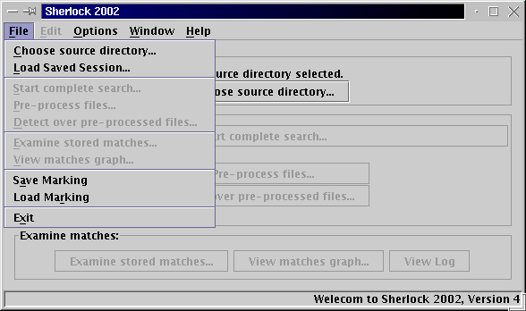
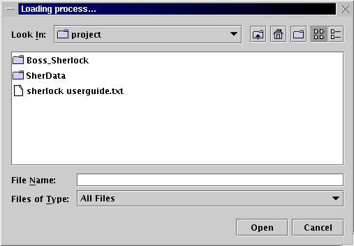

Load Saved Session
Sometimes you may not want to do the pre-processing, the detection and examiing the results at the same time. Then you can save it and do the rest stages later by reloading.
-Click "File Menu"
-Then Click "Load saved session", then a File Chooser will pop up
-Choose the source directory that you want
File menu

"Load Process" File chooser
